Before · exploration
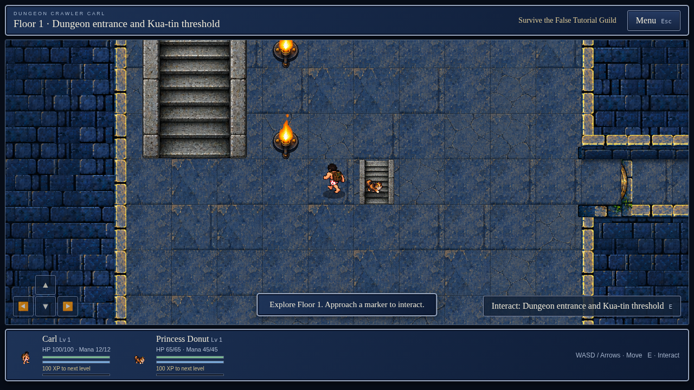
After · earned rewards
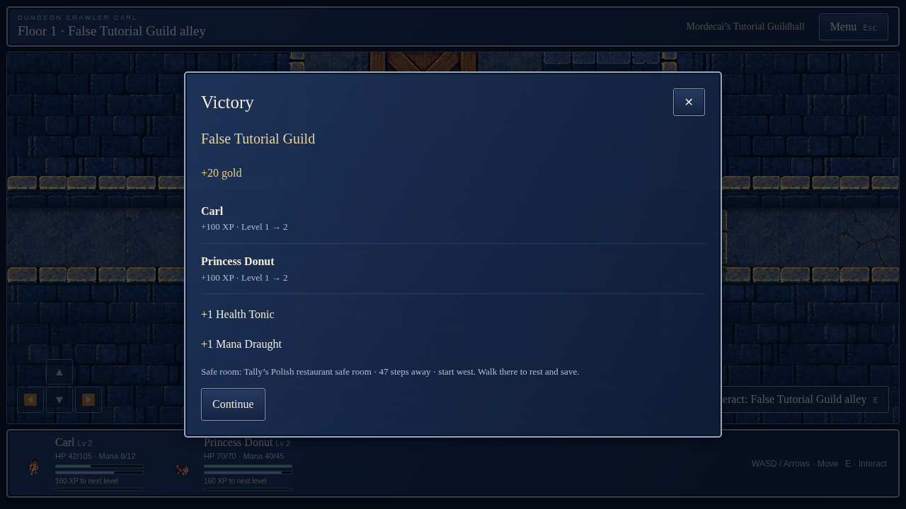
After · enemy turn
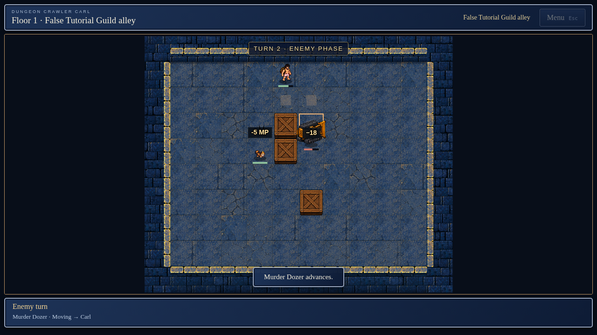
After · safe room
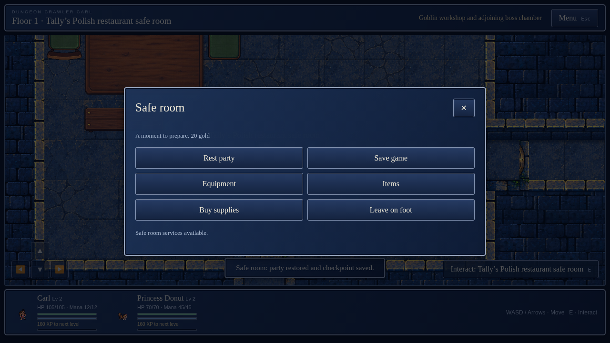
After · resupply
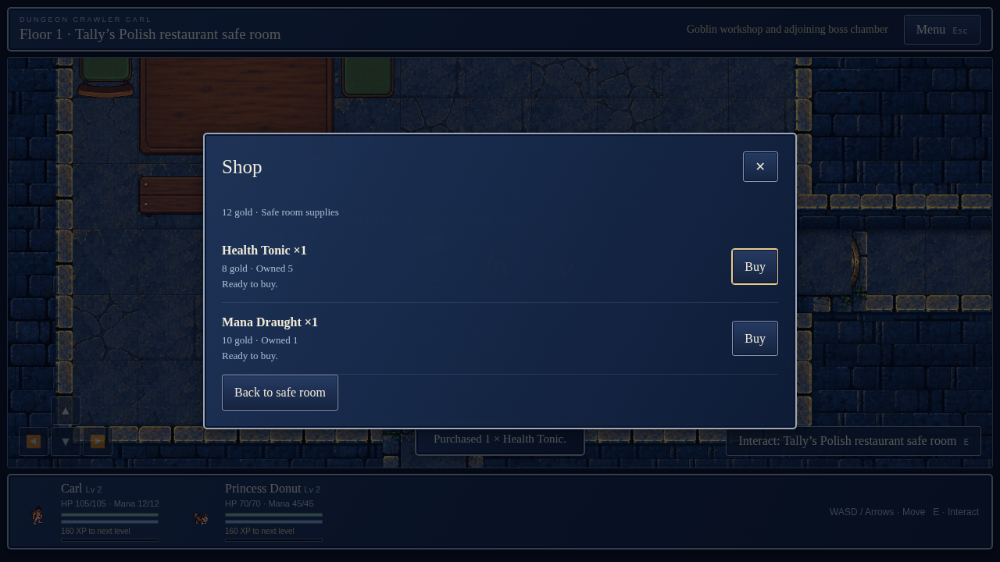
After · equipment preview
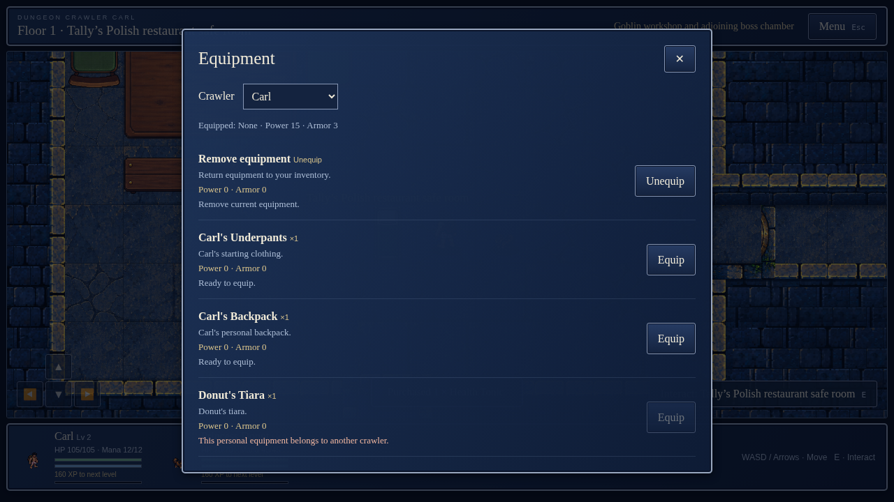
After · equipped
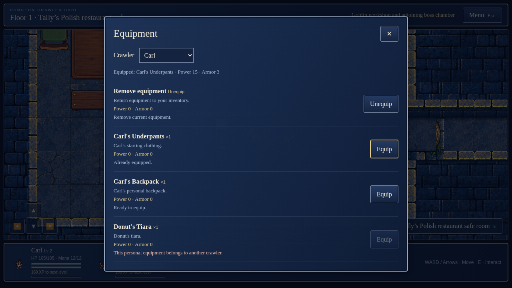
After · mobile equipment
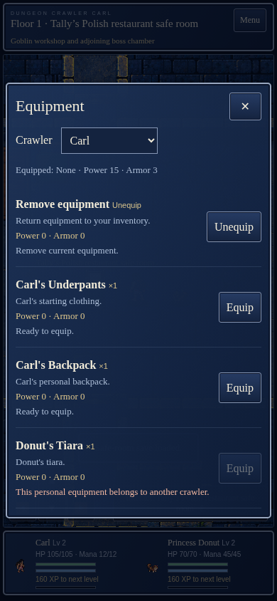
After · mobile items
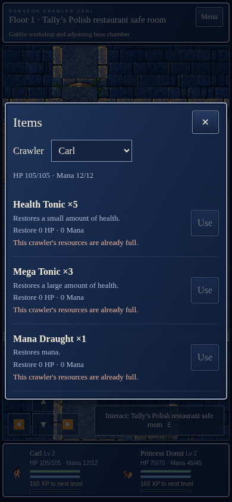
After · purchased supply used
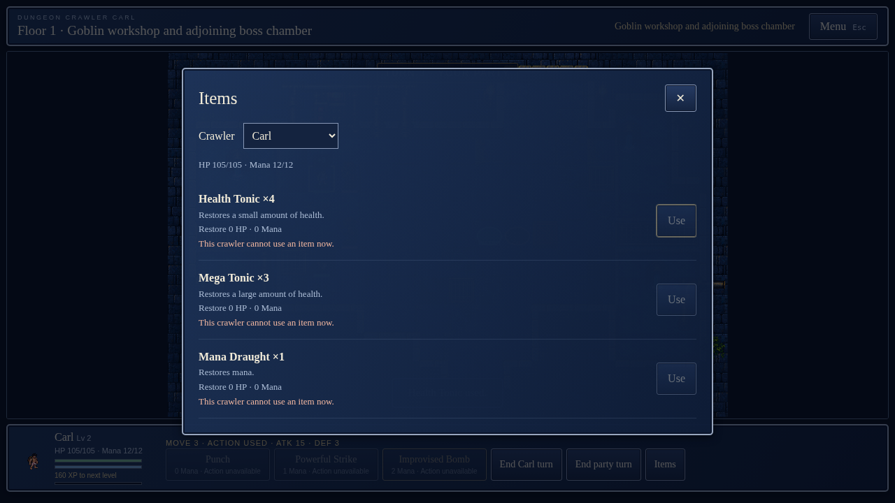
After · completed floor
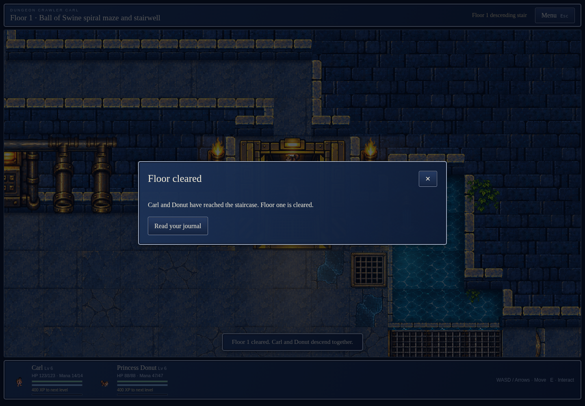